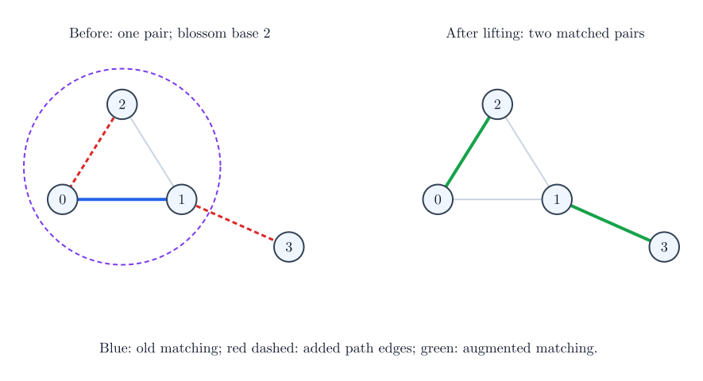
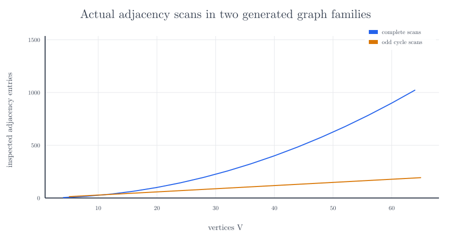

Blossom Matching: Contract an Odd Cycle, Lift an Augmenting Path
Abstract
Select as many graph edges as possible while using each vertex at most once. In a general graph, odd cycles make a straightforward alternating-tree search insufficient. Edmonds' blossom method contracts a suitable odd cycle and lifts the resulting route back to original vertices. We inspect a four-vertex case, retain the original six-vertex example, and check graph families with elementary optimality certificates. The native result and trace share one kernel, so the reported contractions, lifted paths and logical work are actual execution records.
The method and its correctness
A matching M has disjoint endpoints. An augmenting path starts and ends at free vertices and alternates between edges outside and inside M. Flipping its edges adds one pair. Berge's criterion says that M is maximum exactly when no such path exists. To see the reverse direction, compare M with a larger matching N: their symmetric difference consists of alternating paths and cycles, and some path must contain one more N-edge than M-edge. That component augments M.
The search grows an alternating tree from a free root. An edge between suitable even-level branches closes an odd cycle whose base is their common ancestor. Contract this alternating-tree blossom into its base. Its internal matching leaves just the base available to the stem; the cycle's two routes to another vertex have opposite parity, allowing the contracted route to be lifted with the required alternation. Repeated contraction preserves augmenting-path existence for these rooted blossoms. The core represents contraction with base labels and redirects parent links for lifting; it does not mutate the caller's graph.
Simple example: a route that uses the blossom
Take triangle 0–1–2–0 with an extra edge 1–3. The first augmentation matches 0–1. Searching from free vertex 2 initially reaches 1 at odd level and 0 at even level. The closing triangle edge contracts members [0,1,2] to base 2, allowing the exit at vertex 1 to be used. The lifted augmenting path is 2–0–1–3. Its first and last edges enter the matching; 0–1 leaves it.
#include <dm/dm.hpp>
int main() {
std::filesystem::create_directories("build");
const std::vector<std::pair<std::size_t,std::size_t>> edges{{0,1},{1,2},{2,0},{1,3}};
const auto trace=dm::algorithms::blossom_maximum_matching_trace(4,edges);
const std::vector<dm::graphics::DiagramPoint> position{{-1,0},{1,0},{0,1.6},{2.8,-.8}};
dm::graphics::Diagram diagram(75,1100);
for (std::size_t panel=0;panel<2;++panel) {
const double shift=6.3*panel;
const auto& matching=trace.augmentations[panel].matching;
for (const auto& [u,v]:edges) {
dm::graphics::DiagramStroke stroke;stroke.color={203,213,225};
if (matching.mate[u]==v) {stroke.color=panel?dm::RGB{22,163,74}:dm::RGB{37,99,235};stroke.width=4;}
if (!panel) {
const auto& path=trace.augmentations.back().path;
for (std::size_t j=0;j+1<path.size();++j)
if (((path[j]==u&&path[j+1]==v)||(path[j]==v&&path[j+1]==u)) && matching.mate[u]!=v) {
stroke.color={220,38,38};stroke.width=3;stroke.dashed=true;
}
}
diagram.path({{position[u].x+shift,position[u].y},{position[v].x+shift,position[v].y}},stroke);
}
if (!panel) {
dm::graphics::DiagramStroke boundary;boundary.color={124,58,237};boundary.dashed=true;
diagram.ellipse({shift,.55},1.65,1.65,dm::RGB{255,255,255,0},boundary);
}
dm::graphics::DiagramNodeStyle vertex;vertex.circle=true;vertex.width=.5;vertex.height=.5;vertex.padding=5;
for (std::size_t v=0;v<position.size();++v)
diagram.node(std::format("{}-{}",panel,v),{position[v].x+shift,position[v].y},std::to_string(v),vertex);
diagram.text({shift+.8,2.8},panel?"After lifting: two matched pairs":"Before: one pair; blossom base 2");
}
diagram.text({3.8,-2.5},"Blue: old matching; red dashed: added path edges; green: augmented matching.");
diagram.save_svg("build/blossom_lift.svg");
std::print("| search | contracted base | original members |\n| ---: | ---: | :--- |\n");
for (const auto& event:trace.contractions)
std::print("| {} | {} | {} |\n",event.search_index,event.base,event.members);
std::print("\n| search | lifted path | matching size after flip |\n| ---: | :--- | ---: |\n");
for (const auto& event:trace.augmentations)
std::print("| {} | {} | {} |\n",event.search_index,event.path,event.matching.size);
}| search | contracted base | original members |
|---|---|---|
| 1 | 2 | [0, 1, 2] |
| search | lifted path | matching size after flip |
|---|---|---|
| 0 | [0, 1] | 1 |
| 1 | [2, 0, 1, 3] | 2 |

The direct triangle route 2–1 followed by 1–3 would use two consecutive unmatched edges. The even-length internal route 2–0–1 supplies the required matched edge 0–1 before exiting. The trace stores this original-vertex path, including the parent-link changes that implement lifting.
Original six-vertex example and unmatched vertices
Retain the original triangle, stem 1–3–4, and edge 2–5. The returned three pairs reach the universal bound \(\lfloor6/2\rfloor=3\), certifying maximum cardinality. Adding an isolated seventh vertex keeps that bound and matching size, while exposing the public unmatched sentinel.
#include <dm/dm.hpp>
int main() {
const std::vector<std::pair<std::size_t,std::size_t>> edges{{0,1},{1,2},{2,0},{1,3},{3,4},{2,5}};
const auto original=dm::algorithms::blossom_maximum_matching(6,edges);
std::print("Original six-vertex matching size: {}. Pairs:",original.size);
for (std::size_t v=0;v<original.mate.size();++v)
if (original.mate[v]!=dm::algorithms::kGeneralMatchingUnmatched && v<original.mate[v])
std::print(" {}-{}",v,original.mate[v]);
std::print(".\n\n");
const auto extended=dm::algorithms::blossom_maximum_matching(7,edges);
std::print("| vertex with isolated-vertex control | partner |\n| ---: | :--- |\n");
for (std::size_t v=0;v<extended.mate.size();++v)
if (extended.mate[v]==dm::algorithms::kGeneralMatchingUnmatched) std::print("| {} | unmatched |\n",v);
else std::print("| {} | {} |\n",v,extended.mate[v]);
if (original.size!=3 || extended.size!=3) return 1;
}Original six-vertex matching size: 3. Pairs: 0-1 2-5 3-4.
| vertex with isolated-vertex control | partner |
|---|---|
| 0 | 1 |
| 1 | 0 |
| 2 | 5 |
| 3 | 4 |
| 4 | 3 |
| 5 | 2 |
| 6 | unmatched |
Checking the theory: constructive upper bounds
Any matching uses two vertices per edge, so \(|M|\le\lfloor V/2\rfloor\). Every matching edge must also use a different vertex of any vertex cover C, giving \(|M|\le|C|\). Finally, disconnected components cannot share a matching edge, so their separate bounds add.
These facts certify the generated cases below. A complete eight-vertex graph has four disjoint pairs. A seven-cycle has three. An eight-vertex star has a one-vertex cover at its centre and can match only one leaf. Four disconnected triangles contribute at most one pair each, giving four rather than the loose whole-graph bound of six. Each returned matching attains the stated bound.
#include <dm/dm.hpp>
int main() {
std::print("| graph family | vertices | edges | returned pairs | certified upper bound |\n"
"| :--- | ---: | ---: | ---: | ---: |\n");
for (const auto& [family,n]:std::vector<std::pair<std::string,std::size_t>>{
{"complete",8},{"cycle",7},{"star",8},{"four triangles",12}}) {
std::vector<std::pair<std::size_t,std::size_t>> edges;
if (family=="complete")
for (std::size_t u=0;u<n;++u) for (std::size_t v=u+1;v<n;++v) edges.emplace_back(u,v);
if (family=="cycle") for (std::size_t u=0;u<n;++u) edges.emplace_back(u,(u+1)%n);
if (family=="star") for (std::size_t u=1;u<n;++u) edges.emplace_back(0,u);
if (family=="four triangles") for (std::size_t u=0;u<n;u+=3)
for (std::size_t j=0;j<3;++j) edges.emplace_back(u+j,u+(j+1)%3);
const auto matching=dm::algorithms::blossom_maximum_matching(n,edges);
const std::size_t upper=family=="star"?1:family=="four triangles"?4:n/2;
if (matching.size!=upper) return 1;
std::print("| {} | {} | {} | {} | {} |\n",family,n,edges.size(),matching.size,upper);
}
}| graph family | vertices | edges | returned pairs | certified upper bound |
|---|---|---|---|---|
| complete | 8 | 28 | 4 | 4 |
| cycle | 7 | 7 | 3 | 3 |
| star | 8 | 7 | 1 | 1 |
| four triangles | 12 | 12 | 4 | 4 |
Native tests additionally enumerate all 33,868 simple graphs on zero through six vertices. An independent subset recurrence either leaves the first available vertex free or pairs it with each available neighbour, obtaining the exact optimum. Tests compare both core entry points with that result, validate every lifted path and post-flip snapshot, and check internal pairing of each odd set. One thousand shuffled random graphs through twelve vertices and a fixed nested blossom control extend that finite check. The general correctness argument remains the alternating-path and contraction theory.
Checking work and accounting for duplicate edges
Each root search resets its arrays, queues each original vertex at most once, and scans at most 2E adjacency entries. Contractions merge representatives; there are O(V) contractions per search, each with O(V) ancestor, parent and base work. At most V root searches therefore cost \(O(V^3+VE)\), using \(O(V+E)\) unrecorded storage. For a simple graph E=O(V²), this is the familiar cubic bound. Accepted duplicate edges remain in adjacency order, so their extra scans must be included when E counts the supplied edge list. Self-loops are validated, then ignored.
#include <dm/dm.hpp>
int main() {
std::filesystem::create_directories("build");
std::vector<double> complete_n,complete_scans,cycle_n,cycle_scans;
double largest=1;
std::print("| family | vertices | pairs | root searches | contractions | edge scans | scan bound 2E searches |\n"
"| :--- | ---: | ---: | ---: | ---: | ---: | ---: |\n");
for (std::size_t size=4;size<=64;size+=4) for (bool cycle:{false,true}) {
const std::size_t n=size+(cycle?1:0);
std::vector<std::pair<std::size_t,std::size_t>> edges;
if (cycle) for (std::size_t u=0;u<n;++u) edges.emplace_back(u,(u+1)%n);
else for (std::size_t u=0;u<n;++u) for (std::size_t v=u+1;v<n;++v) edges.emplace_back(u,v);
const auto trace=dm::algorithms::blossom_maximum_matching_trace(n,edges);
const auto bound=2*edges.size()*trace.searches;
if (trace.result.size!=n/2 || trace.edge_scans>bound) return 1;
(cycle?cycle_n:complete_n).push_back(n);
(cycle?cycle_scans:complete_scans).push_back(trace.edge_scans);
largest=std::max(largest,double(trace.edge_scans));
std::print("| {} | {} | {} | {} | {} | {} | {} |\n",cycle?"odd cycle":"complete",n,
trace.result.size,trace.searches,trace.contractions.size(),trace.edge_scans,bound);
}
dm::graphics::RPlot::create()
.lines(complete_n,complete_scans,"complete scans",dm::RGB{37,99,235},2)
.lines(cycle_n,cycle_scans,"odd cycle scans",dm::RGB{217,119,6},2)
.title("Actual adjacency scans in two generated graph families")
.x_label("vertices V").y_label("inspected adjacency entries")
.y_limits(0,1.5*largest).size(900,480).save_svg("build/blossom_scans.svg");
}| family | vertices | pairs | root searches | contractions | edge scans | scan bound 2E searches |
|---|---|---|---|---|---|---|
| complete | 4 | 2 | 2 | 1 | 4 | 24 |
| odd cycle | 5 | 2 | 3 | 1 | 13 | 30 |
| complete | 8 | 4 | 4 | 6 | 16 | 224 |
| odd cycle | 9 | 4 | 5 | 1 | 25 | 90 |
| complete | 12 | 6 | 6 | 15 | 36 | 792 |
| odd cycle | 13 | 6 | 7 | 1 | 37 | 182 |
| complete | 16 | 8 | 8 | 28 | 64 | 1920 |
| odd cycle | 17 | 8 | 9 | 1 | 49 | 306 |
| complete | 20 | 10 | 10 | 45 | 100 | 3800 |
| odd cycle | 21 | 10 | 11 | 1 | 61 | 462 |
| complete | 24 | 12 | 12 | 66 | 144 | 6624 |
| odd cycle | 25 | 12 | 13 | 1 | 73 | 650 |
| complete | 28 | 14 | 14 | 91 | 196 | 10584 |
| odd cycle | 29 | 14 | 15 | 1 | 85 | 870 |
| complete | 32 | 16 | 16 | 120 | 256 | 15872 |
| odd cycle | 33 | 16 | 17 | 1 | 97 | 1122 |
| complete | 36 | 18 | 18 | 153 | 324 | 22680 |
| odd cycle | 37 | 18 | 19 | 1 | 109 | 1406 |
| complete | 40 | 20 | 20 | 190 | 400 | 31200 |
| odd cycle | 41 | 20 | 21 | 1 | 121 | 1722 |
| complete | 44 | 22 | 22 | 231 | 484 | 41624 |
| odd cycle | 45 | 22 | 23 | 1 | 133 | 2070 |
| complete | 48 | 24 | 24 | 276 | 576 | 54144 |
| odd cycle | 49 | 24 | 25 | 1 | 145 | 2450 |
| complete | 52 | 26 | 26 | 325 | 676 | 68952 |
| odd cycle | 53 | 26 | 27 | 1 | 157 | 2862 |
| complete | 56 | 28 | 28 | 378 | 784 | 86240 |
| odd cycle | 57 | 28 | 29 | 1 | 169 | 3306 |
| complete | 60 | 30 | 30 | 435 | 900 | 106200 |
| odd cycle | 61 | 30 | 31 | 1 | 181 | 3782 |
| complete | 64 | 32 | 32 | 496 | 1024 | 129024 |
| odd cycle | 65 | 32 | 33 | 1 | 193 | 4290 |

Recording is deliberately more expensive in space: a contraction copies its expanded original-vertex set, and an augmentation copies its path and mate map. There can be O(V²) contractions, so the recorded trace may occupy O(V³+E) storage. The ordinary function allocates no event records. Both use the same search and return the same matching for the same adjacency order.
Conclusion
The four-vertex example shows an actual odd-cycle contraction and a lifted path whose flip increases the matching from one pair to two. The original six-vertex example still returns three pairs. Explicit unmatched handling, family-specific upper bounds and exhaustive small-graph comparisons make the outputs checkable. Native traces replace any report-side reconstruction of contraction and lifting.
The API now rejects vertex counts beyond INT_MAX before allocating graph storage and validates every endpoint. It computes unweighted maximum cardinality; different tied optima can depend on edge order. Generated graphs are sufficient for these structural properties, so no observed dataset is needed.
References
- Berge, C. (1957). Two theorems in graph theory. Proceedings of the National Academy of Sciences, 43(9), 842–844. https://doi.org/10.1073/pnas.43.9.842.
- Edmonds, J. (1965). Paths, trees, and flowers. Canadian Journal of Mathematics, 17, 449–467. https://doi.org/10.4153/CJM-1965-045-4. The implementation uses an array-based unweighted search with parent-link lifting.